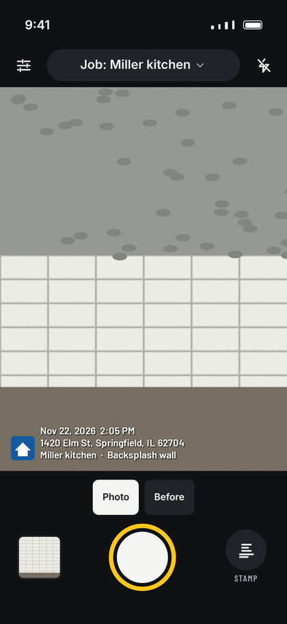
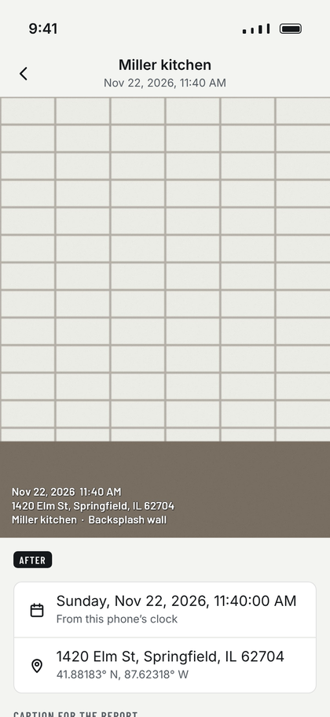
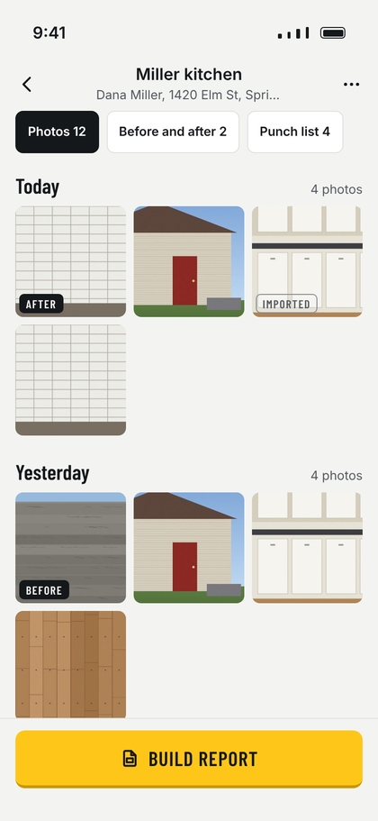
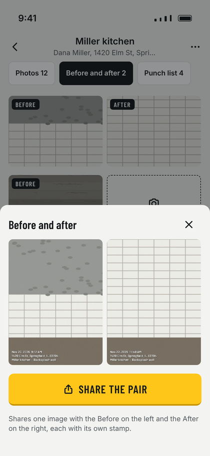
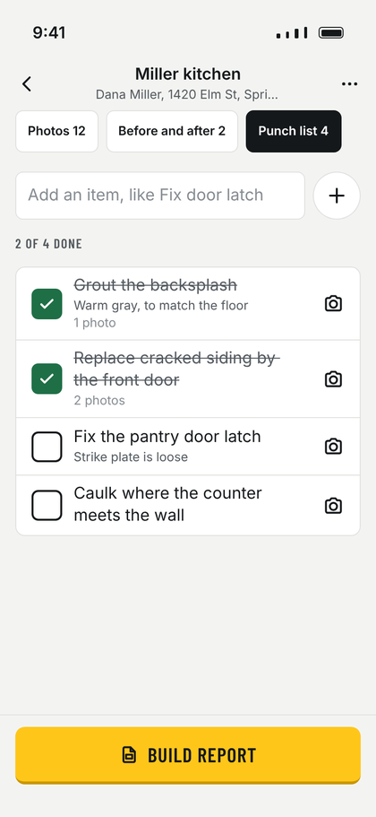
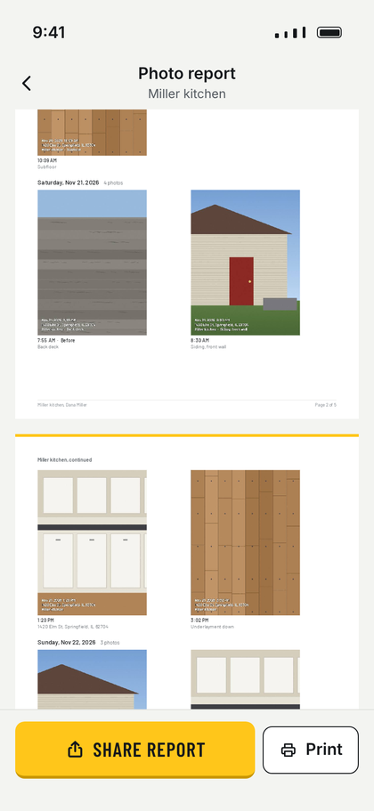
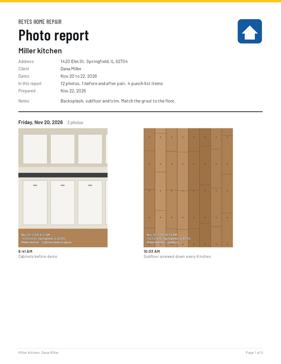
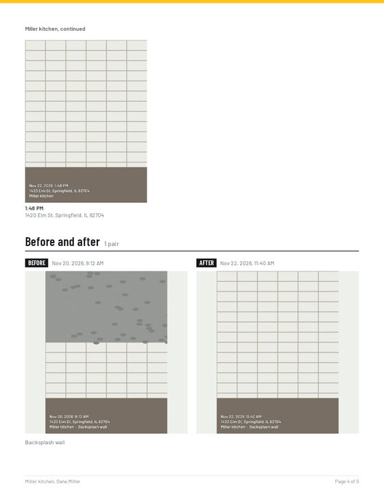
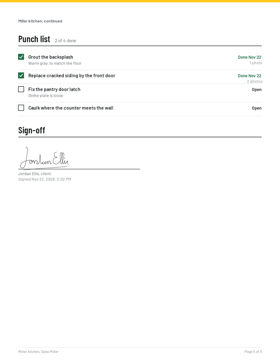

Job photos that show when and where.
For contractors, cleaners, landscapers, inspectors and field crews. The date, time, address and coordinates are printed into every photo, the photos file themselves by job, and the day ends with a photo report your client can read.
Get it on the App StoreiPhone. Free to download: the camera, every stamp line, one job and your first report are free.






What it does
Date, time and place on every photoThe stamp is burned into the photo at full size: date, time, street address, latitude and longitude, altitude, a note, the job name, your company and logo. Compact, Standard or Full, in any corner, three sizes.
Photos filed by jobPick the job on the camera once. Every shot lands there, by day, and is saved to Photos too if you want.
Before and afterMark a Before, then take its After from the same spot with the Before shown faintly to line up the shot. Share the pair as one image.
Punch listWhat is left to do, with photos as proof. Tick items off as the work gets done.
A report your client can readPhotos in a grid with captions, pairs side by side, the punch list and a client signature, as one PDF. Share, print or save to Files.
Works without signalNo signal in the basement? The stamp prints the coordinates instead of the address, and the shutter never waits.
The report



Sample job and names are made up.
Private
No account and no server. Your photos, locations and reports stay on your iPhone until you share them. Location is used only while the app is open. See the privacy policy.
The stamp prints your iPhone's own clock and location at the moment you take the photo.